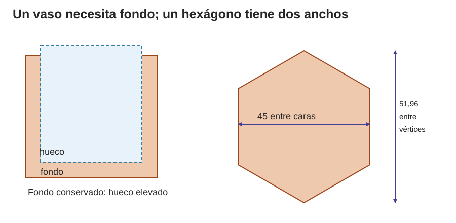
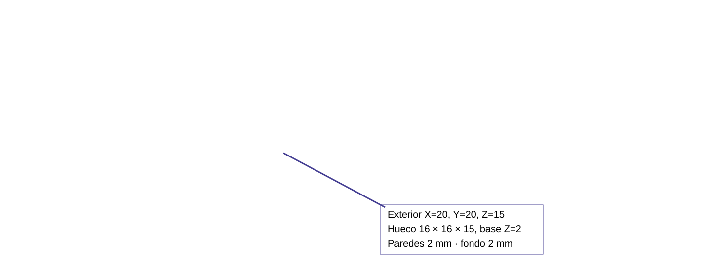
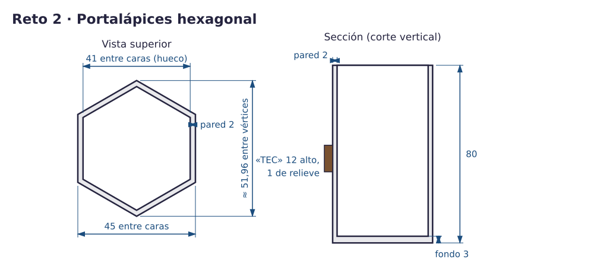
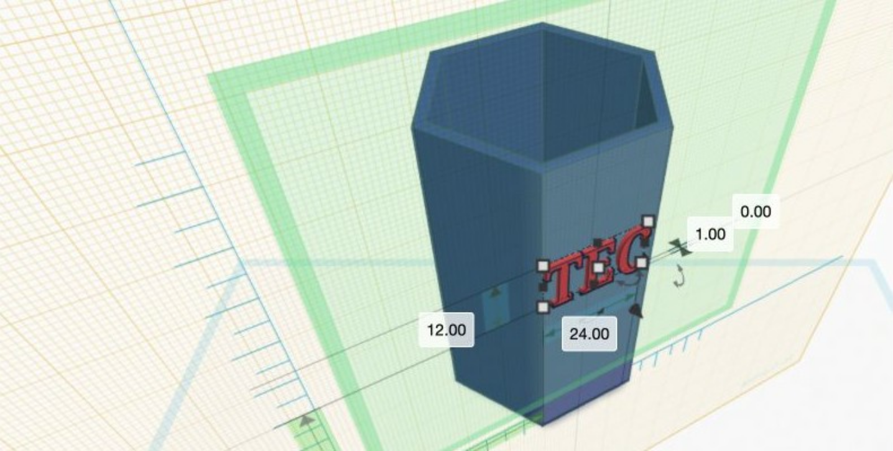
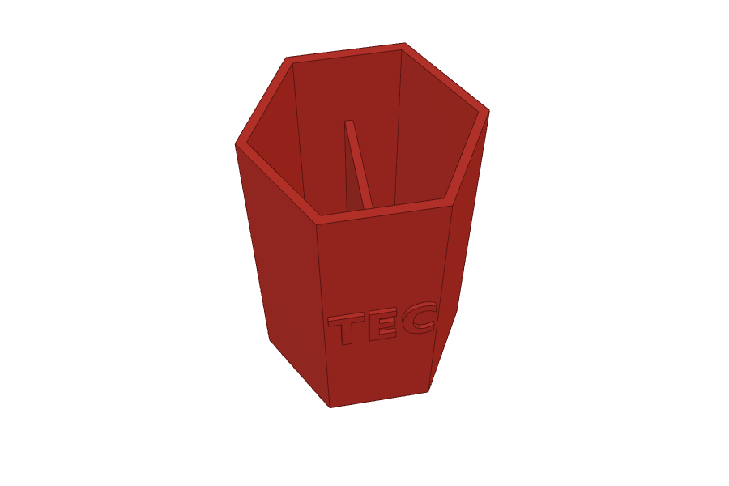
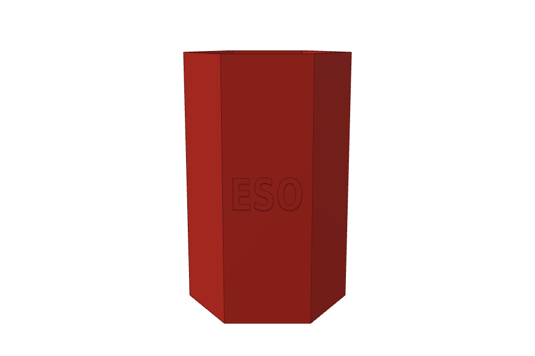
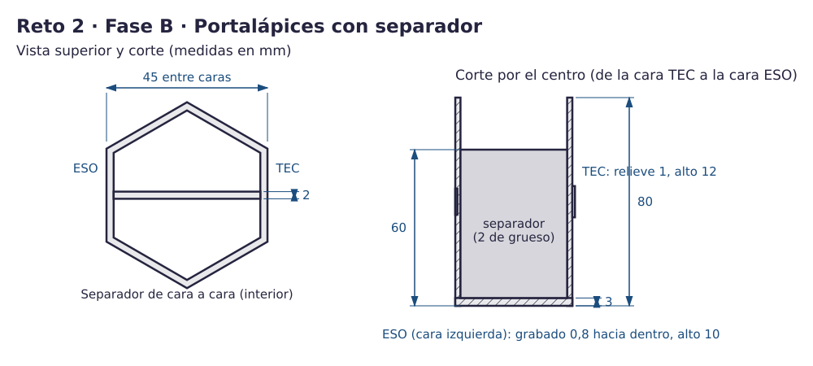

Contenido
Lo que vas a conseguir
Un portalápices hexagonal de 80 mm de alto, con el fondo cerrado y la palabra TEC en relieve en una de sus caras. En la Fase A aprenderás a vaciar una pieza sin perder el fondo y a escribir sobre una cara que no es horizontal. En la Fase B le pondrás un separador interior y grabarás una palabra hacia dentro.
1. Vaciar una pieza sin perder el fondo
Un recipiente es un sólido al que le quitas el interior con un hueco. El truco está en dónde empieza el hueco: si empieza en 0, atraviesa la pieza y te queda un tubo; si lo subes un poco, debajo queda material, que es el fondo.

Ahora tú (sin nota). Haz un cubo de 20 × 20 × 15 y réstale un hueco de 16 × 16 × 15 alineado por los centros de ancho y fondo, con elevación 2. ¿Cuánto miden las paredes y el fondo?
Compruébalo: paredes de (20 − 16) / 2 = 2 mm y fondo de 2 mm. Después baja el hueco a elevación 0 y mira desde abajo: ahora es un tubo.

2. El hexágono tiene dos anchos
Un hexágono regular tiene seis lados iguales. Si lo mides de una cara a la cara opuesta obtienes 45 mm; de un vértice (una punta) al vértice opuesto obtienes unos 52 mm (51,96). El plano da la medida entre caras.

3. Fase A · Construye el cuerpo
Crea un diseño nuevo, llámalo reto2 y construye el vaso del plano: un hexágono sólido y otro hueco dentro, que deje paredes de 2 y fondo de 3. Intenta hacerlo solo con el plano; si te atascas, abre los pasos.
Pistas: los pasos uno a uno
- Arrastra un Polígono desde Formas básicas. En el inspector, pon Lados = 6.
- Míralo desde arriba: a izquierda y derecha tiene que haber caras planas, no puntas. Si ves puntas, gíralo 90° con la flecha curva (puedes escribir 90).
- Escribe sus medidas: ancho 45, fondo 51,96 y alto 80. Así queda un hexágono regular de 45 entre caras.
- Duplícalo (Ctrl + D). La copia será el interior: ancho 41, fondo 47,34, alto 80, en Hueco y con elevación 3 (el fondo).
- Selecciona los dos, pulsa Alinear y usa solo los puntos centrales de ancho y fondo. Después, Agrupar.
Piensa. ¿Por qué el interior mide 41 y no 43?
Ver respuesta
Porque hay una pared de 2 mm a cada lado: 45 − 2 − 2 = 41.
4. Escribe sobre una cara: el Plano de trabajo
Hasta ahora todo se colocaba sobre el plano horizontal. Para pegar las letras a una cara lateral tienes que cambiar el plano de trabajo a esa cara: así el texto se apoya en ella, como si la cara fuera el suelo. Se activa con el botón Plano de trabajo (tecla W) haciendo clic en la cara, y se quita igual, haciendo clic fuera de la pieza.
Pon TEC en una cara lateral plana: letras de 12 mm de alto, 1 mm de relieve y un ancho que quepa en la cara. Si te atascas, abre los pasos.
Pistas: los pasos uno a uno
- Pulsa el botón Plano de trabajo (o la tecla W) y haz clic en una cara lateral plana del vaso. Aparece una cuadrícula nueva sobre esa cara: ahora es tu plano de trabajo.
- Arrastra un Texto sobre esa cara y escribe TEC.
- Ajusta: letras de 12 mm de alto, ancho menor que la cara (unos 24 mm; la cara mide unos 26) y 1 mm de grosor, que es lo que sobresale.
- Vuelve al plano normal: pulsa W otra vez y haz clic en una zona vacía, fuera de la pieza.
- Selecciona vaso y texto y pulsa Agrupar.

5. Comprueba la Fase A
- Mide 80 mm de alto: el texto no lo hace más alto.
- Desde abajo, el fondo está cerrado.
- Las paredes son iguales en las seis caras.
- Las letras se leen desde fuera y tocan la cara.
| Si te pasa esto… | Prueba esto |
|---|---|
| El vaso no tiene fondo | Alineaste también en vertical y el hueco bajó a 0. Ponle otra vez elevación 3. |
| Las paredes son distintas | No es un hexágono regular: revisa ancho y fondo de los dos polígonos. |
| El texto flota o se hunde | Vuelve a poner el plano de trabajo en la cara y coloca el texto sobre ella. |
6. Fase B · Separador y grabado
Fase B · sin pasos. La Fase A es lo que tiene que hacer todo el mundo. La Fase B es más difícil: solo tienes el plano y, si te atascas, unas pistas que se abren de una en una. Prueba primero sin abrirlas.
Qué cuenta para la nota. Con la Fase A de los tres retos bien hecha puedes llegar al nivel 3 (7,5). Para el nivel 4 hacen falta la Fase B de los tres retos y el reto 4. Usar las pistas no baja la nota.
Vas a añadir dos cosas a tu portalápices:
- Un separador interior de 2 mm que vaya de cara a cara y llegue a 60 mm de alto: así quedan dos compartimentos y los lápices largos asoman.
- La palabra ESO grabada 0,8 mm hacia dentro en la cara opuesta a TEC. Grabar es lo contrario de un relieve: las letras se hunden.



Antes de empezar, guarda una copia. La Fase B se hace sobre el mismo diseño reto2, porque se entrega una sola pieza por reto: la más completa que termines. En tu panel de Tinkercad, pasa el ratón por el diseño reto2, pulsa el engranaje y elige Duplicar; llama a la copia reto2_A. Esa copia no se entrega: es por si algo se rompe.
El separador
Pista 1 · la idea
El separador es un cubo sólido metido en el hueco. Como el vaso ya está agrupado, al agruparlo con él se suma. Tiene que tocar las dos caras interiores y apoyarse en el fondo.
Pista 2 · medidas por deducir
Mira el corte del plano: el separador empieza en el fondo y llega a 60 desde la base. ¿Qué elevación le das y qué altura tiene? Y de largo: ¿cuánto mide el interior de cara a cara?
Truco: hazlo un poco más largo que el interior. Así se mete en las paredes y queda unido seguro; si solo las toca, a veces queda una rendija.
Pista 3 · los números, para comprobar
- Cubo sólido de 43 × 2 × 57 con elevación 3: va del fondo (3) a 60, y sus extremos se meten 1 mm en cada pared (el interior mide 41).
- Selecciónalo junto con el vaso y alinea por los centros de ancho y fondo (no en alto). Después agrupa.
El grabado
Pista 1 · la idea
Grabar es restar: el texto va en Hueco y se mete dentro de la cara.
Pista 2 · dónde empieza el texto
Pon el Plano de trabajo en la cara opuesta a TEC, como en la Fase A. Un texto colocado ahí queda apoyado en la cara, con elevación 0 medida desde ella. Para que entre 0,8 mm en la pared, ¿qué elevación le das?
Pista 3 · los números, para comprobar
Texto ESO en Hueco: 10 de alto, unos 20 de ancho, 1 de grosor y elevación −0,8. Entra 0,8 en la pared y sobresale 0,2 por fuera, que no importa porque es hueco. Céntralo en la cara, a media altura, y agrupa.
Comprueba la Fase B
- Sigue midiendo 45 entre caras y 80 de alto.
- Desde arriba se ven dos compartimentos; el separador toca las dos caras y no llega al borde.
- ESO se lee desde fuera y está hundido; mirando por dentro, la pared no tiene agujeros.
| Si te pasa esto… | Prueba esto |
|---|---|
| Hay una rendija entre separador y pared | Hazlo más largo (43) y vuelve a alinearlo por los centros. |
| Las letras atraviesan la pared | El hueco entra demasiado: grosor 1 y elevación −0,8, no más. |
| ESO no se ve | Está fuera de la cara o en sólido: comprueba que está en Hueco y apoyado en el plano de trabajo. |